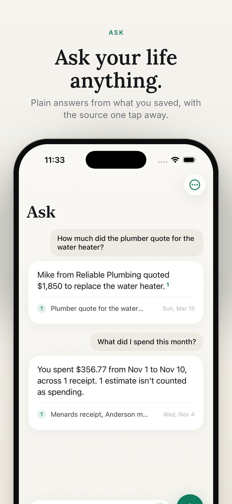

How Remember works
Remember is a private search engine and a small AI writer. Both run on your iPhone. Here's what happens to the things you save, step by step.
Step 1 · Save
Everything becomes words.
Words are what can be searched. So the first job is turning whatever you save into text.
Photos and screenshots
Apple's Vision framework reads the text in them. It also tags what's in the picture, like "receipt" or "dog," so photos without text can be found too.
Voice notes
Recording keeps going if the screen locks. Apple's speech recognizer writes it down, on the iPhone only. If it can't for your language, the recording is kept without a transcript instead of being sent out.
PDFs and scans
Text is read page by page. Scanned pages go through text recognition. If part of a long file couldn't be read, Remember tells you.
Share from any app
Tap Share, then Remember. It's picked up the next time the app opens, and the same item is never added twice.
Your screenshots
One tap reads your recent screenshots. The ones with real text are kept. The rest are skipped.
Your calendar
Optional. Events from the last 90 days and the next 60, kept up to date as they change.
Step 2 · Understand
Every memory gets indexed.
Each memory is cut into short passages at sentence breaks. Then four things are worked out for each one.
Meaning
Apple's language toolkit turns each passage into 512 numbers that capture what it means. That's how "what did the plumber charge?" can find "Mike quoted $1,850 to replace the tank," with no words in common.
Names
Apple's name tagger finds people, places and companies. A name in two or more memories becomes a topic, so the estimate, the email and the receipt for one job end up together.
Dates ahead
Apple's date detector finds "call by Friday" or "due March 2027" and turns it into a heads-up. A word like "Friday" only counts in recent notes.
Money
Dollar amounts, and the total on each receipt: the line that says "total," not "subtotal."
Step 3 · Find
Two searches at once, blended.
Every question is searched by meaning and by exact words. Then Remember reads what you meant.
By meaning
Your question's meaning is compared with every passage, using the vector math built into the iPhone's chip.
By exact words
The ranking method most search engines use. Rare words like "Menards" count a lot. Words like "the" count for nothing.
By what you meant
The time you named ("last month," "tomorrow"), the kind of thing ("receipts," "voice notes") and the people you mention all lift the matches that fit. Weak matches are dropped.
This is called retrieval-augmented generation. Find the right material first, then write only from it. Most AI services run it in a data center. Remember runs it on your phone.
Step 4 · Answer
Code for facts. AI for words.
Some answers have to be exact. Those never go to the AI.
Built in code
Spending is added up receipt by receipt, and any receipt without a readable total is listed, not skipped. "What did I save this week?" and "What's on my calendar tomorrow?" are read straight from the dates.
Written by Apple's on-device model
Everything else goes to the language model built into iOS 26. It gets your question and the best matching passages, each with its date and who wrote it. It's told to answer only from those and to cite them.
Follow-ups
Ask "And when can he start?" and Remember knows who "he" is from the last answer.
On other iPhones
Without Apple Intelligence, Remember shows the closest matching memories instead of a written answer. Search works the same.
Step 5 · Check
Every answer is checked before you see it.
A small AI can slip. Code checks its work.
- Dates that don't add up are removed. A line that says "Monday, November 11" when the 11th is a Wednesday never reaches you.
- Sources match the answer. The numbered sources under an answer are the notes it used. An unrelated note never shows up as a source.
- Honest about time. Ask about last month when nothing from then matches, and the answer says so first.
- "I don't have that" means it. When your memories don't cover a question, Remember says so instead of guessing.
- Clean, readable answers. Repeated lines, half-finished sentences and stray formatting are removed.
One question, start to finish
Follow one question through.
- You askHow much did the plumber quote for the water heater?
- Remember searchesThe note about the plumber's quote ranks first. It matches on meaning and on the words "plumber" and "quote."
- The on-device model writesIt reads that passage and answers in one sentence, citing the note.
- Code checks itDates, the citation and the wording are checked. The source goes under the answer.
- You get the answerMike from Reliable Plumbing quoted $1,850 to replace the water heater. 1

Step 6 · Show up
Wherever you are on your iPhone.
Siri, Shortcuts, Action button
Ask, save a note and hear what's coming up, without opening the app.
iPhone search
Memories show up when you swipe down to search. That index can't be read while your iPhone is locked.
Widgets
Home Screen and Lock Screen. Details stay hidden until you unlock. One tap saves a voice note.
Morning brief
Today's events and heads-ups in one notification, scheduled on the iPhone.
Private by design
Why there's no server.
Remember has no code that connects to the internet. That's the core of the app, not a setting.
Nothing to sign up for
No account, no email, no password.
Nothing for us to hold
We never receive your memories, so there's nothing on our side to leak, sell or hand over.
Nothing to wait on
No connection needed to save, search or ask.
Stored on your iPhone
Cloud sync is off. Your iPhone backup includes your memories if you have backups on.
The app sends nothing
App Store purchases, your iPhone backup and Siri are Apple's own services, under Apple's privacy rules. Remember itself sends nothing.
Yours to take or delete
Export everything as plain files. Delete a memory and any old answers that quoted it go too.
Built entirely on Apple frameworks:
Good to know
What to expect.
- Written answers need Apple Intelligence, on iPhone 15 Pro or later. Other iPhones get search with the closest matches.
- Matching by meaning works best in English. Notes in other languages are matched by their exact words.
- Your memories live on one iPhone. They don't sync between devices, so keep backups on.
- Links are saved with the title and text that came with them. Remember doesn't open the web page.
Your phone already has the answer.
Free for your first 40 memories.
Get it on the App Store